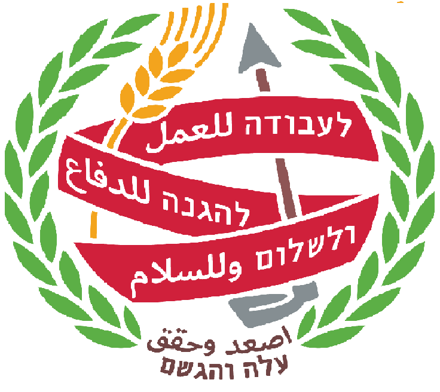
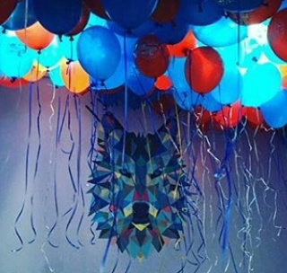

|
| 

|

דף ראשי |
ההיסטוריה הק"נית |
יצירת קשר |
מי אנחנו?
הק"ן שלנו נפתח לראשונה בשנת 1995 בראש העין הותיקה בשם מועדון התמנון.
הק"ן החדש שבו אנו נמצאים כיום נפתח בשנת 2009 ונקרא ק"ן ראש העין.
בטח אתם שואלים את עצמכם למה אנחנו רושמים ק"ן ולא קן כמו כל שאר הקנים?
התשובה לכך היא שבשנת 2015, הק"ן שלנו החליט לשים גרשיים במילה קן ולהפוך את המילה לראשי תיבות.
משמעות ראשי התיבות ק"ן היא: קהילת נוער.